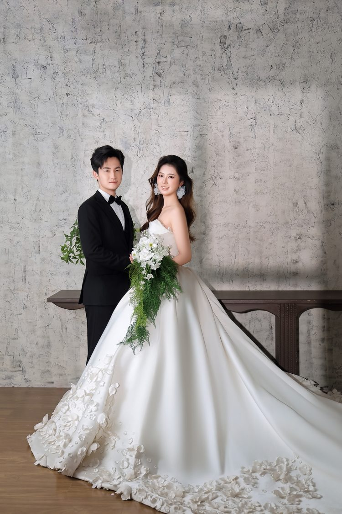
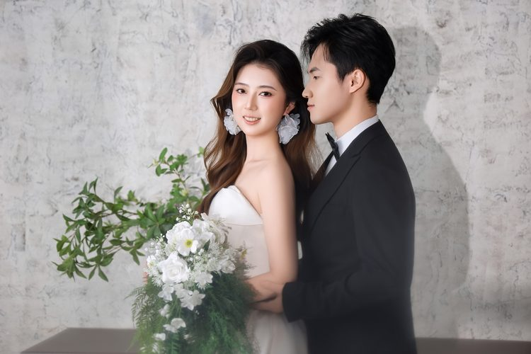
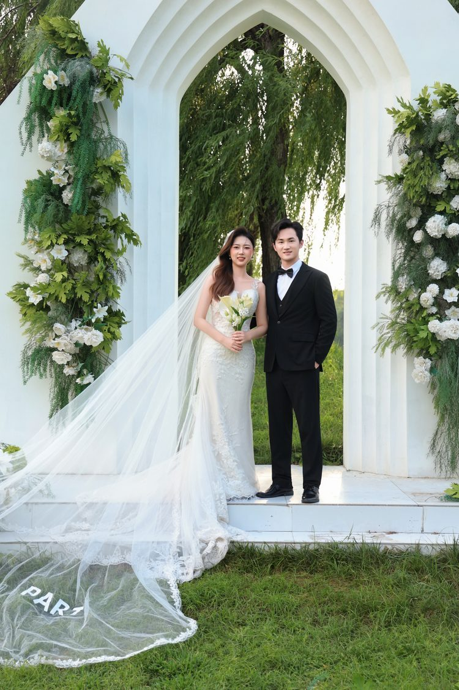
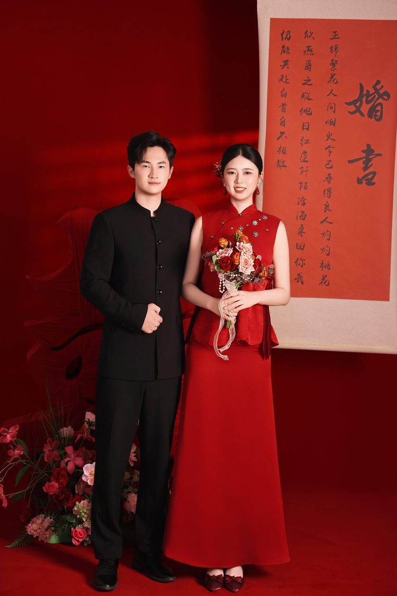

金正旭 刘俊懿
2026.09.26
星期六 济南 丙午年八月十六



婚礼日期：2026年9月26日 星期六 中午设宴。
二〇二六年九月二十六日 午时设宴
时间
9.26 星期六 午时设宴
地点
美悦云禧酒店 5楼 云颂厅
地址
山东省济南市槐荫区兴福寺路2660号
点下面的按钮，微信会问一句要不要跳转，点「继续」就行。

敬请回复
席位要提前排，人数也提前定。请亲朋好友在 9 月 15 日前，给我们回个信息。期待您的莅临。
收到了 · 那天见
留言
共 0 条写一句话给我们，婚礼当天会印出来，摆在签到台上。
还没有人留言 · 您来写第一句
存下这张喜帖
长按上面这张图，保存到相册